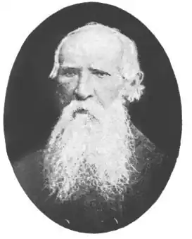

Поет і письменник Пилип Семенович Морачевський (14,11.1806–17.04.1879) ніколи не користувався широкою відомістю і вже наприкінці XIX ст. вважався забутим. Нині його ім’я відоме лише вузькому колу літературознавців, викладачів вузів, шанувальників літератури. Мабуть, найбільшої слави зажив Морачевський в Сумах, де освічена частина жіноцтва – "прекрасные сумянки", за словами поета, називала його "Сумською зіркою" через те, що ледве не в кожному його вірші згадувалась сяюча зірка (1, 178).
Уродженець Чернігівщини, П.Морачевський після закінчення в 1828 р. Харківського університету наступного року був направлений на роботу до Сумського повітового училища, де протягом трьох учбових років викладав математику. Дослідники його творчості небезпідставно гадають, що писати вірші він почав ще на студентській лаві, та відомою його літературна діяльність стала під час перебування в Сумах (1, 172). Тут були написані вірші російською мовою "Первое мая", "Дорога", "Монастырь" (надруковані 1831 р. в "Украинском альманахе" в Харкові) (2, 529), невелика віршована комедія в трьох діях "Сумская причудница", якою захоплювались жительки Сум, і уривки з якої були опубліковані вже після смерті автора в 1901 р. в газеті "Южный край". Тоді ж і в цій же газеті були надруковані написані в Сумах твори П. Морачевського "Ночь", "Акростих", "Мечты", "Станем", дві елегії (2, 530).
Найвизначнішим твором П. Морачевського є велика, в шести частинах, поема "Чумаки, або Україна з 1768 року", як назвали цей твір дослідники (довга авторська назва починається зі слів "Чумаки, або смутні часи України"). Написана вона під впливом поезій Т. Шевченка, а надто його поеми "Гайдамаки". Героями "Чумаків…" є лицарі українського козацтва, які боролися за свободу своєї Батьківщини: Наливайко, Конашевич-Сагайдачний, Т. Трясило, Пав— люк, Остряниця, Б. Хмельницький, Гонта, Залізняк. Дуже понівечена цензурою (було викинуто понад 120 рядків), поема побачила світ окремим виданням 1864 р. в Чернігові, а повністю була опублікована в 1930 р. в збірнику "За сто літ" (X. – К., Кн. 6. – С 37–106) (2, 534, 623–624). П. Морачевський є також автором твору "До чумака, або война янгло-хранцузо-турецька у 1853 і 1854 роках", виданого в Києві 1855 р.; складеного 1853 р. "Словаря малороссийского языка по полтавскому наречию", доля якого невідома, та інших творів. (3, 460, 465–466). Друкувався П. Морачевський під псевдонімом Ф. (Хв.) Галузенко, ініціалами Ф. М. та ін. Досить велика і різноманітна літературна спадщина Морачевського ніколи не оцінювалась надто високо і здебільшого не була опублікована. Та й сам автор не ставився до неї дуже серйозно. Головною справою його життя став переклад українською мовою Святого Письма. Коли він почав виконувати підготовчу роботу до цього, точно невідомо, як невідомо і те, чим він займався в плані літературної роботи майже двадцятиріччя – з 1834 р. до початку 1850-х рр. Гадано, що саме в цей період в його світогляді відбувся якийсь перелом, що зовні знайшло вираз у тому, що в своїй творчості він перейшов з російської мови на українську. Ще перебуваючи в Сумах, П. Морачевський зрозумів, що математика не є його покликанням, тому 1832 р. склав при Харківському університеті іспит на викладача російської мови і словесності і тоді ж перевівся до Луцької гімназії, потім працював у гімназіях Кам’янця-Подільського, Ніжина та в Ніжинському ліцеї. Один з колишніх ніжинських учнів П. Морачевського (до Ніжина Пилип Семенович перевівся 1849 р.) згадував, що постійно відвідуючи вчителя, часто заставав його за роботою над Біблією слов’янською і латинською мовами (1, 174). Мабуть, великою підготовчою роботою пояснюється той факт, що коли в 1859 р. П. Морачевський вийшов у відставку і безпосередньо приступив до перекладу Слова Божого українською мовою, справи у нього стали посуватися досить швидко. Помітки на полях чернетки Євангелія свідчать, що 13 березня 1860 р. він почав працювати над перекладом Євангелія від Івана, а 16 листопада того ж року завершив повний переклад Євангелій Євангелієм від Марка (4, 94). Швидкі темпи перекладу засвідчує також листування П. Морачевського з митрополитом Санкт-Петербурзьким і Новгородським Ісидором. Справа в тому, що перекладач звернувся до духовної особи високого рангу, сподіваючись на її підтримку в опублікуванні праці. В листі за 28 вересня 1860 р. він писав, що переклав уже Євангеліє від Івана і Матвія, в чернетці майже закінчив переклад Євангелія від Луки і сподівається наступного року закінчити переклад всього Євангелія. Разом з листом П. Морачевський надіслав митрополиту підготовлені ним до друку два Євангелія. До речі, з цього ж листа дізнаємося, що при перекладі Пилип Семенович користувався не лише слов’янським і латинським перекладами, як згадував його учень, а й російським, німецьким, французьким і польським. Пояснював П. Морачевський і чому він взявся за таку нелегку і відповідальну працю. До цього його спонукало палке бажання дати змогу простому народові читати і слухати Боже Слово зрозумілою рідною мовою (3, 468). Митрополит Ісидор не забарився з відповіддю, але вона була негативною. В листі за 14 жовтня 1860 р. він писав, посилаючись на консультацію з відповідальними особами з Синоду: "перевод Евангелий, сделанный Вами или другим кем-либо не может бьггь допущен к печатанию" (3, 469). Коментарі, як то кажуть, зайві. Такий поворот справи, на щастя, не вивів Морачевського з рівноваги, і він продовжував працювати. Просячи митрополита повернути надісланий йому рукопис двох Євангелій, П. Морачевський повідомляв, що вже завершив переклад двох інших Євангелій, тобто від Луки і Марка, почав перекладати Діяння Апостольські і має намір перекласти також Послання, бо вважає це справою богоугодною і радий буде залишити її принаймні дітям на знак свого їм благословення (3, 470). Рукопис було повернуто в квітні 1861 р. На цей час П. Морачевський вже відредагував написане в 1860 р. і продовжував працювати над перекладом всього Нового Заповіту. Того ж 1861 р. П. Морачевський подав свою працю на розгляд до Академії Наук. Вперше вона обговорювалась на’ засіданні відділу російської мови і літератури 11 січня 1862 р. і була визнана "замечательной". Судячи з усього, ознайомив зібрання з працею П. Морачевського славнозвісний філолог-славіст П. Срезневський, який в записці, оголошеній на засіданні відділення 8 лютого 1862 р. писав, що переклад Євангелія П. Морачевського є одним з найкращих перекладів на слов’янські мови, і доводив необхідність його видання. Щоб одержати на це дозвіл, було створено комісію в складі І. Л. Срезневського двох інших знавців української мови академіків А. Х. Востокова – відомого славіста, та О. В. Нікітенка – історика літератури і критика, яким доручалося зробити висновки щодо перекладу, щоб скласти подання на ім’я президента Академії. Авторитетна комісія оцінила переклад П. Морачевського як блискучий і визнала його працю вищою мірою видатною як з вчено-філологічного погляду, так і з погляду релігійно-морального. В записці, складеній названими вченими, писалося: ,,…нет сомнения, что перевод Евангелия П. Морачевского должен сделать зпоху в литературном образовании малорусского народа" (3, 471, 473, 475). Зважаючи на такий відзив іменитих вчених, відділення мови і літератури Академії, зазначаючи, що "…переводчик выполнил с блистательным успехом свою важную задачу, …как глубокий знаток малороссийского наречия, он успел извлечь из него такие вираження и обороты, которые при всей своей общеупотребительности совершенно согласуются с возвышенным значением предлагаемых им истин", просило президента Академії клопотатися перед Святішим Синодом про дозвіл надрукувати переклад (3, 475-476). Ще до цього Академія надіслала працю П. Морачевського до Синоду, а останній передав її на розгляд Калузькому архієпископу Григорію (Микола Миткевич) – землякові перекладача. Переклад справив таке враження на архієпископа, що він не міг без сліз говорити про нього і повернув до Синоду з найкращим відзивом (3, 472). Та це не допомогло. Синод не дозволив друкувати Євангелія українською мовою. Точна дата відмови Синоду невідома, але непрямі дані свідчать, що сталося це, очевидно, 1863 р., бо на грудень 1862 р., коли П. Морачевський завершив переклад Діянь Апостольських, доля рукопису ще не було вирішена, а на початку 1864 р. переклад вже повернувся до Академії. Саме тут автор і вирішив його залишити (3, 477-478). Зважаючи на таке рішення, П. Морачевський просив тимчасово повернути йому рукопис для доопрацювання, обіцяючи натомість надіслати більш повний переклад Нового Завіту, бо встиг уже перекласти всі Послання. Наприкінці 1864 р. він виконав свою обіцянку і передав рукопис на зберігання до бібліотеки АН. Приблизно в цей час Морачевський завершив переклад Одкровення Івана і Псалтиря (3, 477–478). На жаль, усе це так і не було опубліковане. Виняток становить лише чорновий варіант п’ятої глави Євангелія від Матвія, надрукований в "Киевской старине" в 1902 р. (4, 96–99). Доля переданого П. Морачевським Академії Наук рукописного перекладу українською мовою Нового Завіту залишається невідомою. Принаймні зроблена 1899 р. спроба відшукати остаточний варіант рукопису в Академії не мала успіху. Пошуки ці, очевидно, проводив син І. І. Срезневського – історик літератури академік В. І. Срезневський. 1902 р. спадкоємці П. Морачевського передали до рукописного відділу АН чернетки здійсненого 1860 р. перекладу Євангелій разом з переліком поправок до нього. Відомо також, що текст цього перекладу, рукописи ряду творів, дещо з листування П. Морачевського мала в своєму розпорядженні редакція журналу "Киевская старина". Ці відомості можуть стати в нагоді дослідникам історії перекладу Біблії українською мовою, якщо вони візьмуться за пошуки перекладацької спадщини П. Морачевського, чия праця так високо поціновувалась видатними вченими, А це дійсно варто було б зробити. А ще П. Морачевський був автором написаного українською мовою курсу "Священної історії" для училищ і народного читання (1862 р.), якому теж не судилося побачити світ. На наш погляд, П. С. Морачевський насамперед як перекладач українською мовою Слова Божого, а також як поет і письменник заслуговує на увічнення пам’яті про нього.